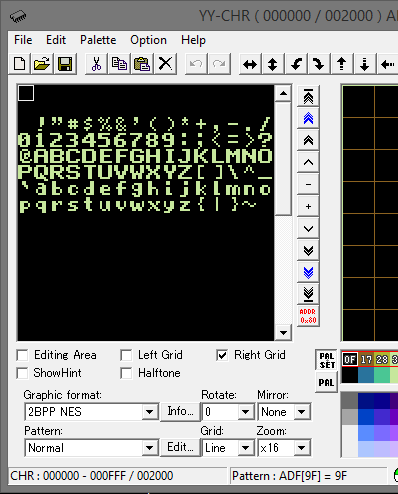

01、第一个程序
我们可以做的最简单的事是在屏幕关闭时向背景中写入数据。
ppu_off();
vram_adr(address);
vram_put(tile);
ppu_on_all();
我们来过一下这些方法的功能
ppu_off();
关闭屏幕（将PPU屏蔽寄存器2001的xxx1 1xxx位复位为零。）这样可以使PPU自由地执行任何操作。
然后，设置地址以设置写入的起始位置。
vram_adr(NTADR_A(x,y));
这将2个字节推送到ppu地址寄存器2006，首先是高字节，然后是低字节。它在屏幕上设置一个用于写入的位置。
我们想要写入＃0名称表，在PPU RAM中介于 $2000和 $23ff之间。Nametable是指tilemap或称作背景屏幕。
这个宏将在编译时生成正确的地址。
#define NTADR_A(x,y) (NAMETABLE_A|(((y)<<5)|(x)))
X和Y是贴图的坐标，X从0到31，Y从0到29。
然后我们就可以向PPU DATA寄存器 $2007发送数据了，每次1 byte。
最明显的方法是使用vram_put(tile)函数。只需循环到所有数据都已发送完毕。
如果要使用相同的图块填充屏幕的大部分区域，可以使用vram_fill(tile,length)方法。
发送数据字节后，NES PPU的地址会自动递增。因此，每个数据字节将在最后一个数据的右边1，填充到下一行。
然后打开屏幕（寄存器2001中将xxx1 1xxx位翻转为ON状态）。
ppu_on_all();
我们正在做的是在瓷砖地图上放置值，告诉NES在屏幕上绘制哪些瓷砖。就像在网格上安排拼图一样。
我让瓷砖看起来像字母。我将它们定位为与ASCII地图相同，所以我可以将它们称为“A”或“ABC”，它与图形匹配。

该文件名为Alpha.chr。我有“incbin” - 在crt0.s末尾的图形并放入一个“CHR”段，链接器指向该段放在文件的末尾。
我们的链接器配置是nrom_32k_vert.cfg，它确保文件的拼接方式能使模拟器知道如何运行。
https://github.com/nesdoug/01_Hello/blob/master/hello.c
https://github.com/nesdoug/01_Hello
安装CC65，配置compile.bat文件中的cc65 home路径，将源码直接放到CC65目录下 /cc65/01_Hello/
或者将代码放到其他地方，通过修改路径的方式指向到cc65目录
PS:当我第一次用ASM编写NES游戏时，我试图写入屏幕，但感到困惑，因为我写的内容只会出现在屏幕的左上角。
由于PPU奇怪的工作方式，写地址（2006）会覆盖滚动寄存器（2005）。
写入屏幕后，重要的是写入2000 1次，2005 2次（或2006 2次，2005 2次）以重新调整屏幕。
在许多商业游戏中，你会看到写完PPU后执行的代码...
lda #0
sta $2006
sta $2006
sta $2005
sta $2005
neslib在后台自动执行此操作。如果你在neslib.s中看到nmi代码的底部附近，你会看到它完全正如我所描述的那样，就在屏幕重新显示之前。
lda #0
sta PPU_ADDR ;2006
sta PPU_ADDR ;2006
lda
sta PPU_SCROLL ;2005
lda
sta PPU_SCROLL ;2005
lda
sta PPU_CTRL ;2000
(暂时不知道怎么翻译这个)
The 2000 write sets the proper nametable.